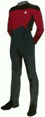
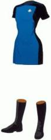
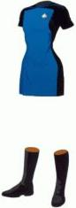
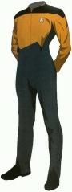
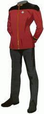
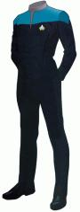
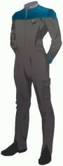
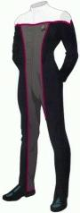
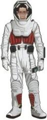

|
|
Uniformi di The Next Generation, Deep Space Nine e Voyager |
| Insegne di grado Sezioni Mostreggiature della Flotta Stellare |
| Prima e seconda stagione di The Next Generation |
 |
| Dalla terza stagione di The Next Generation |
 |
| Uniforme corta di The Next Generation |
   |
| Cadetti alla terza stagione di The Next Generation |
 |
| Sottufficiali alla terza stagione di The Next Generation |
 |
| Uniforme degli Ammiragli |  |
| Alta Uniforme |
 |
| Uniforme di Deep Space
Nine fino a The Ascent e di Voyager |
 |
| Uniforme di Deep Space
Nine da Rapture in avanti |
 |
| Uniforme da fatica
di Deep Space Nine da Rapture in avanti |
 |
| Uniforme da ambiente desertico composta da una maglietta sbracciata, un paio di pantaloni e un mantello con cappuccio, tutti in tessuto bianco. All'altezza del petto della maglietta e del mantello c'è una striscia di tessuto colorata a che indica la sezione di appartenenza. L'uniforme è completata da calzature molto simili a un paio di scarpe da tennis (Shadows and Symbols). |
 |
| Uniforme dei cadetti di Deep Space Nine |
 |
| Uniforme dei piloti (Drive) |  |
| Tuta spaziale |  |
| Uniforme di un futuro alternativo |
 |
Le insegne di grado sono collocate sulla parte destra del colletto della divisa. Sui gradi della Flotta Stellare è inciso l'assegnazione del membro dell'equipaggio e un numero di serie (Distant Origin).
| Rosso | Comando e navigazione |
| Blu | Sezione medica e scientifica |
| Giallo senape | Sicurezza e sezione tecnica |
| The Next Generation e Deep Space Nine fino a Jem'Hadar. | |
| Deep Space Nine da The Search - Part I in avanti e Voyager. |  |
| Mostreggiatura del futuro vista All Good
Things..., The Visitor,
Timeless e
Endgame. Sembrerebbe essere la mostreggiatura in uso circa tra il 2390 e il 2405. |
|
| Mostreggiatura del XXIX secolo vista in Future's End e Relativity. |
 |